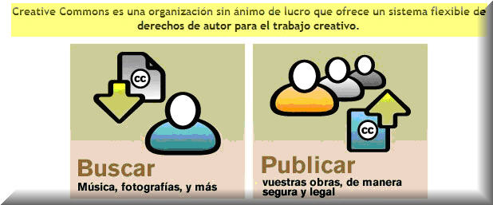

¿Qué son las licencias Creative Commons?

Las licencias
Creative Commons nacieron en Estados Unidos en el año 2002 y son un
conjunto de textos legales creados con el objetivo de que los autores
pudieran ceder algunos derechos sobre sus obras y se reservaran otros.
Como se comenta en el sitio web de Creative Commons España (http://es.creativecommons.org/proyecto/):
Como se comenta en el sitio web de Creative Commons España (http://es.creativecommons.org/proyecto/):
El proyecto CC España se inició en febrero del año 2003 cuando la Universidad de Barcelona decide buscar un sistema para publicar material docente siguiendo el ejemplo del Massachusets Institute of Technology. Se decide optar por el sistema de licencias de Creative Commons y se establece un acuerdo de trabajo por el cual la UB lideraría el proyecto de adaptación de las licencias al Estado Español en castellano y catalán. En febrero del año 2004 se abre una lista de discusión sobre las licencias donde participa mucha gente. A partir del dia 1 de octubre de 2004 las licencias de Creative Commons adaptadas a la legislación sobre propiedad intelectual del Estado Español están disponibles para todos en castellano y catalán.
XALABARDER, Raquel (2006) comenta que las licencias CC no son contrarias al copyright, de hecho se basan, precisamente, en el régimen de la propiedad intelectual: sin esta "propiedad" reconocida previamente por la ley, los autores no podrían otorgarlas.
Poner vuestras obras bajo una licencia Creative Commons no significa que no tengan copyright. Este tipo de licencias ofrecen algunos derechos a terceras personas bajo ciertas condiciones.
1. [XALABARDER,
Raquel (2006). «Las licencias Creative Commons: ¿una alternativa al
copyright?».
UOC
Papers [artículo
en línea]. N.º 2. UOC. [Fecha de consulta: 19/10/2009].
<http://www.uoc.edu/uocpapers/2/dt/esp/xalabarder.pdf>]
Tomado de los cursos en línea de la Consejería de Educación de la Comunidad de Madrid. elaborado originalmente por:
"José Cuerva Moreno"